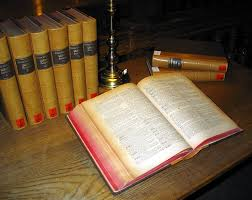

Добро пожаловать на мой сайт!
Лабораторная работа №2(РПИ)
Виды ссылок
Ссылка на сайт
Перейти на сайтСсылка на страницу
Перейти на страницуСсылка на файл
Скачать файлВнешние ссылки
Перейти на внешний сайтГрафические ссылки
Книга — источник мудрости и вдохновения
Книги — это уникальные творения человечества, которые хранят в себе знания, эмоции и опыт поколений. Они способны перенести нас в другие миры, познакомить с великими людьми прошлого и помочь понять самих себя. Книга — это не просто набор страниц с текстом, это дверь в бескрайний мир фантазии, науки, философии и искусства. С самого детства книги становятся нашими спутниками. Сначала это сказки, которые учат нас добру и справедливости, затем — учебники, открывающие двери в мир знаний. Во взрослой жизни книги становятся источником вдохновения, советчиками и друзьями. Они помогают нам справляться с трудностями, находить ответы на сложные вопросы и просто наслаждаться увлекательными историями.
Каждая книга — это отдельная вселенная.
Одни книги заставляют нас задуматься о смысле жизни, другие — погружают в мир приключений и фантазий. Например, классические произведения, такие как «Война и мир» Льва Толстого или «Преступление и наказание» Федора Достоевского, раскрывают глубину человеческой души и заставляют задуматься о морали и нравственности. Современные авторы, такие как Харуки Мураками или Джоан Роулинг, дарят нам новые миры, где магия и реальность переплетаются.